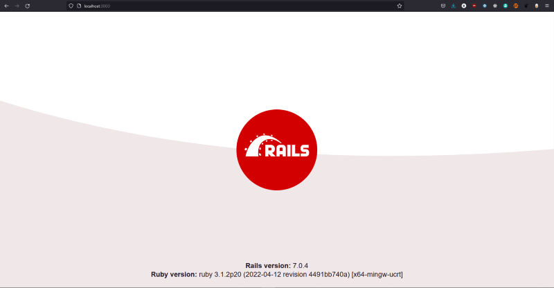

Ruby on Rails
Ruby on Rails, también conocido como RoR o Rails, es un framework de
aplicaciones web de código abierto escrito en el lenguaje de
programación Ruby, siguiendo el paradigma del patrón Modelo Vista
Controlador (MVC).
La filosofía de Rails es la de "no
reinventar la rueda", por lo que se basa en las mejores prácticas de
desarrollo web.
Instalacion de Ruby on Rails
Usando la funcionalidad de gem aportado en la instalación base de Ruby podemos instalar rails.
$ gem install railsUna vez instalado, podemos comprobar la versión de Rails que tenemos instalada con el siguiente comando:
$ rails --versionCreación de nuestra primera página
Para crear nuestra primera página web con Ruby on Rails, lo primero que debemos hacer es crear un nuevo proyecto. Para ello, ejecutamos el siguiente comando:
$ rails new [nombre_del_proyecto]
$ rails new blog
$ cd blogUna vez creado el proyecto, podemos ejecutarlo con el siguiente comando:
$ rails server
$ ruby bin\rails serverSi todo ha ido bien, podremos acceder a nuestra página web en la siguiente dirección: http://localhost:3000
Para más información sobre Ruby on Rails, puedes visitar la página de ejemplo básico.